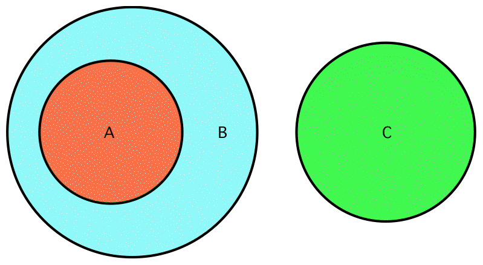

A Case Study

SEU140+2
- If A ⊂ B and B ∩ C = ∅ then A ∩ C = ∅
- Data suggests looking at the proofs
Proofs
- EP elegantly uses ∈, ⊂, ∩=∅
- Metis and SInE use ∈, ⊂, ∩=∅, ∅, \, ∩
- VampireLT uses ∈, ⊂, ∩=∅, ∅, \, ∩, ∪
- Grzegorz Bancerek's proof similar to that of Metis and SInE
- EP finds a better proof?